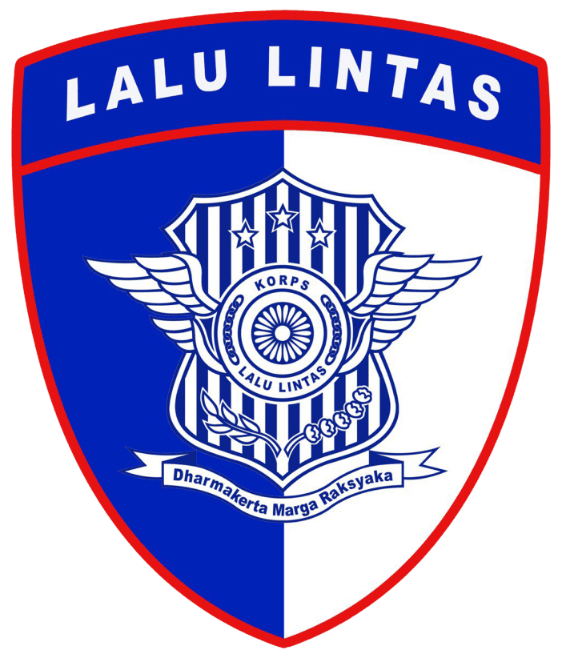
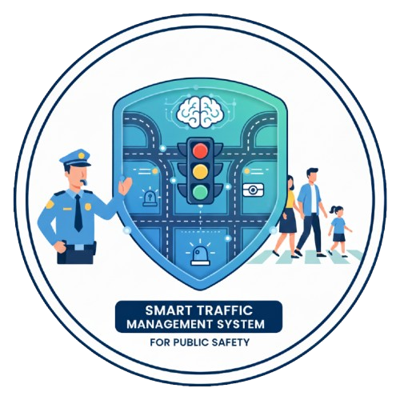

Smart Traffic Monitoring System for Public Safety

Memuat Peta & Data...
Korps Lalu Lintas
Kepolisian Negara Republik Indonesia

Smart Traffic Management System for Public Safety
Jelajahi Berita Kecelakaan
Jelajahi Peta
Pilih salah satu Satwil untuk menjelajahi peta lebih lanjut
Pencarian Rute
Buka
Aktifkan untuk pilih titik via klik peta (klik pertama untuk Lokasi Asal, klik kedua untuk Lokasi Tujuan)
Pilih titik via klik peta
Mobil 🚗
Sepeda 🚲
Jalan Kaki 🚶
Tampilkan Rute
Reset Rute
Hasil Arah Rute
Tutup
Satwil
Pilih Satwil
Ganti
Sebaran Lokasi Black Spot Selama 7 Hari Terakhir
−
Tanggal Awal
Tanggal Akhir
Informasi Temporal Black Spot
Grafik Statistik
−
Jumlah Troublespot
−
Status CCTV
−
Top 5 Black Spot
−
Basemap
Layer
Legenda
+
Pilih Basemap
ESRI World Topo
OpenStreetMap
Imagery
Pilih Layer Spasial
Troublespot
Black Spot
Kemacetan
Black Link
Black Area
Objek Vital
CCTV
Prediksi Risiko Kecelakaan
Wilayah Administrasi
Ukur
Alat Ukur
+
Jarak
Luas
X
Pilih tool untuk mulai
+
−